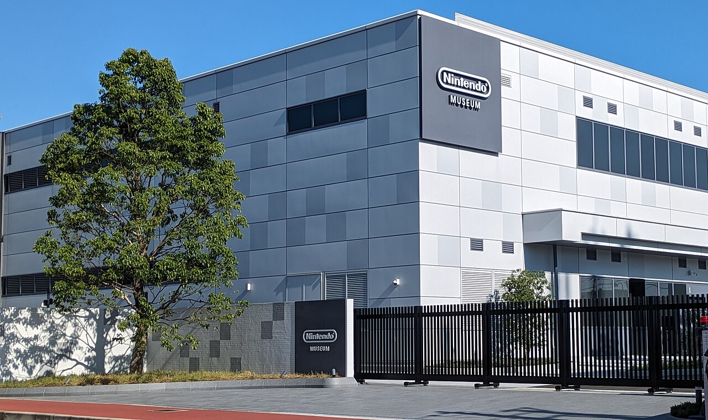
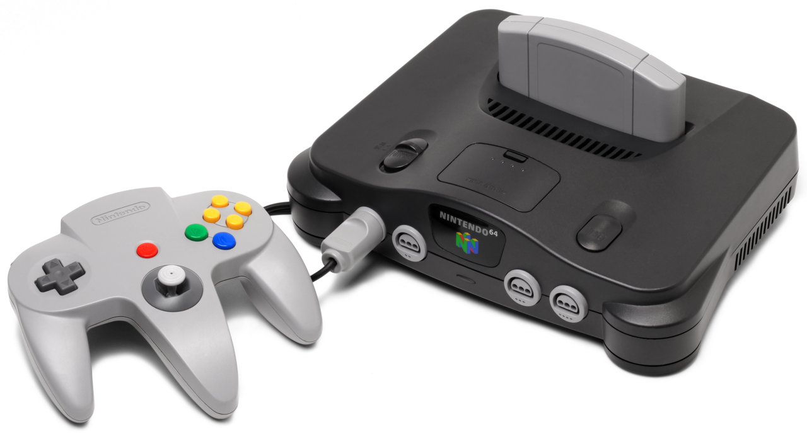
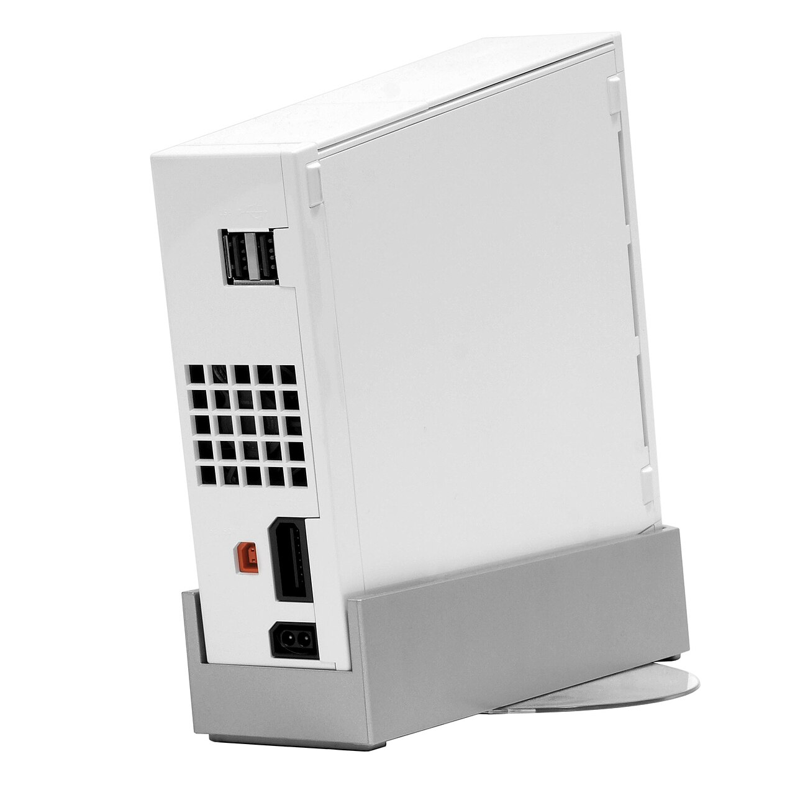

Nintendo's own museum, opened 2024 on the site of its old factory in Uji, ten minutes from Kyoto. Every console and game the company ever made downstairs, and giant playable exhibits upstairs, including huge versions of classic controllers you play with a partner.



Every product since 1889, from hanafuda playing cards to the Switch, laid out in one sweep.
An oversized NES pad you operate two-person, one on the d-pad, one on the buttons. Built for a father-son team.
Play hanafuda and the card games Nintendo made a century before video games.
Your ticket loads 10 digital coins, each interactive exhibit costs a few, choose wisely.
The Hatena Burger cafe lets you build your own, and the gift shop is exclusive merch you can't get elsewhere.